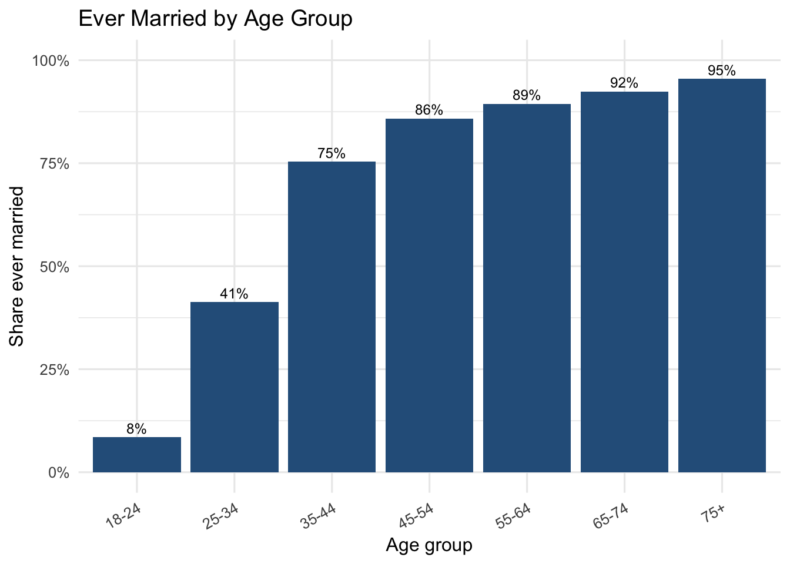
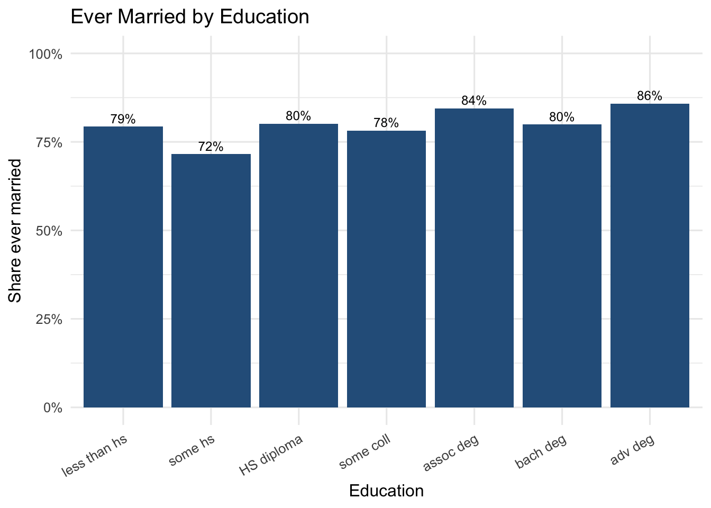
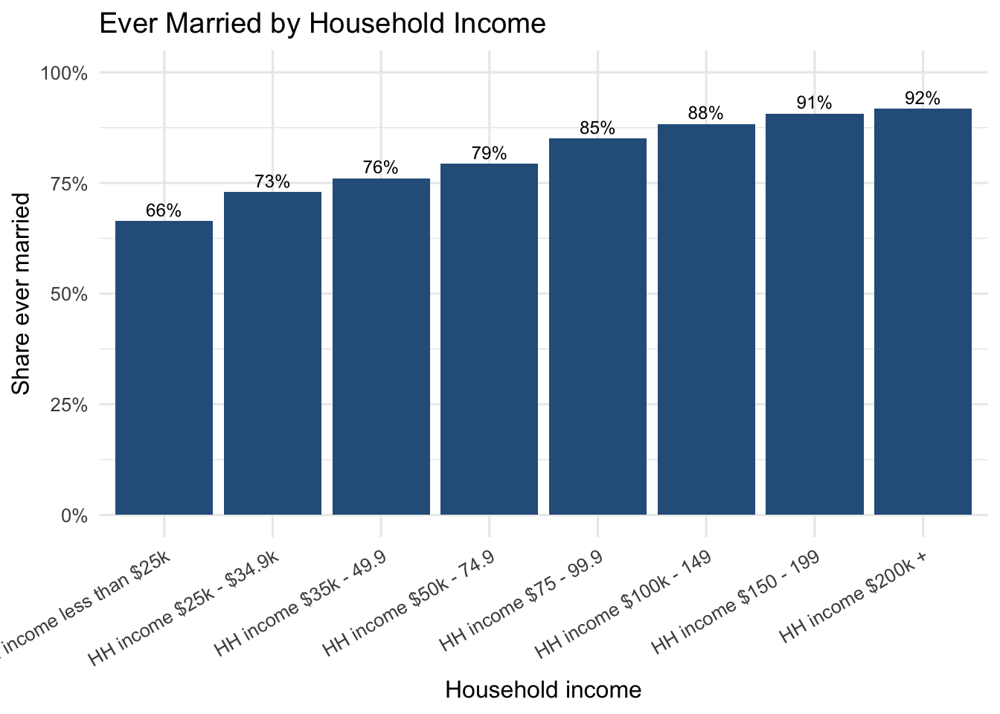
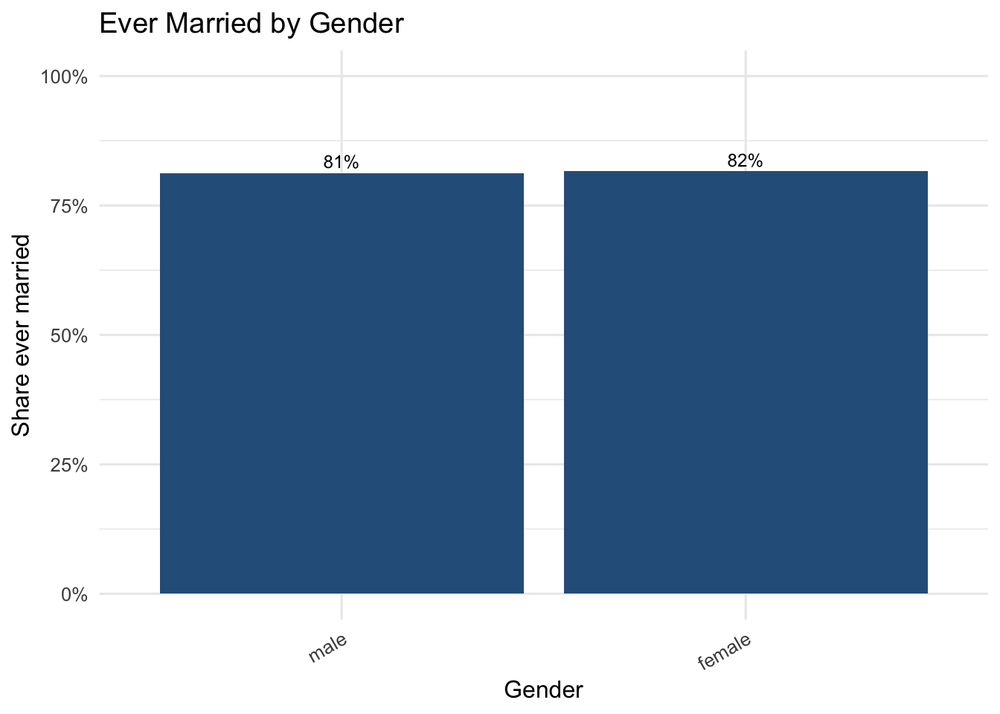
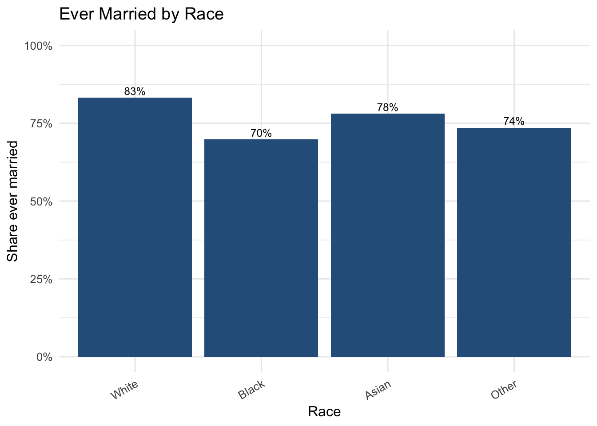
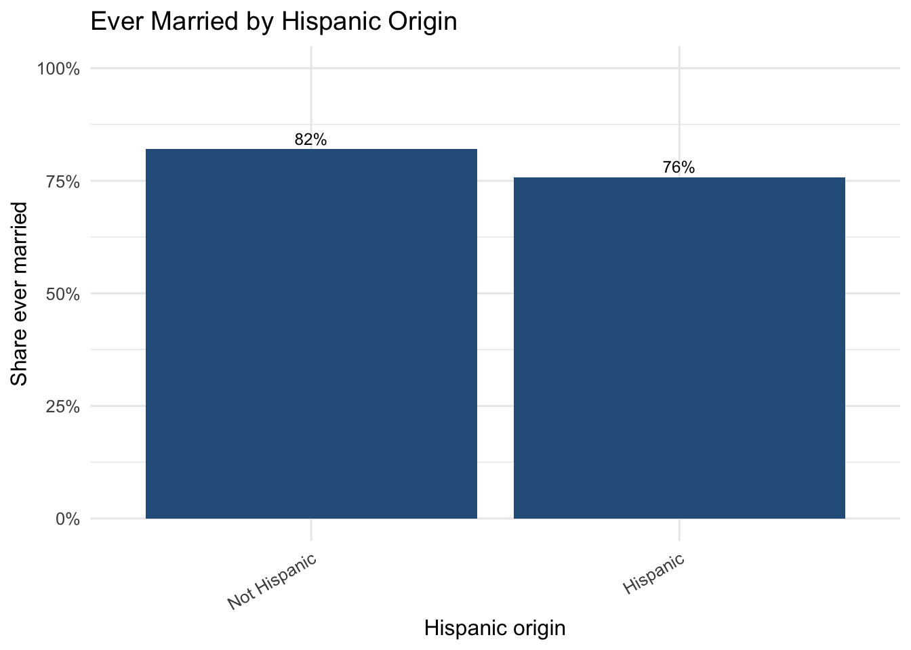
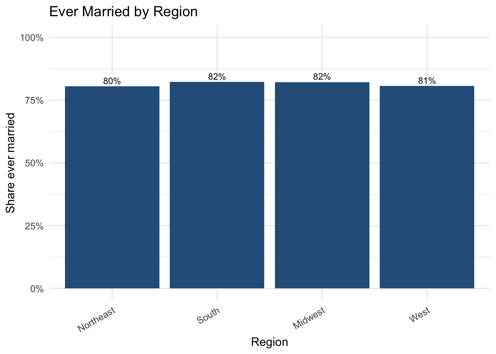
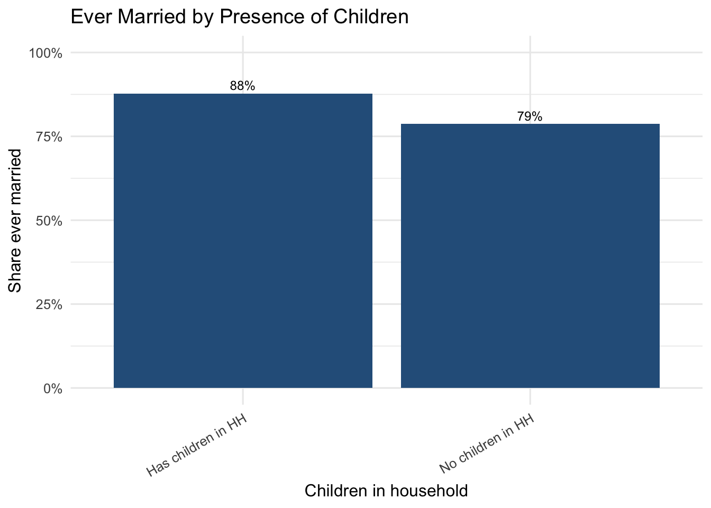
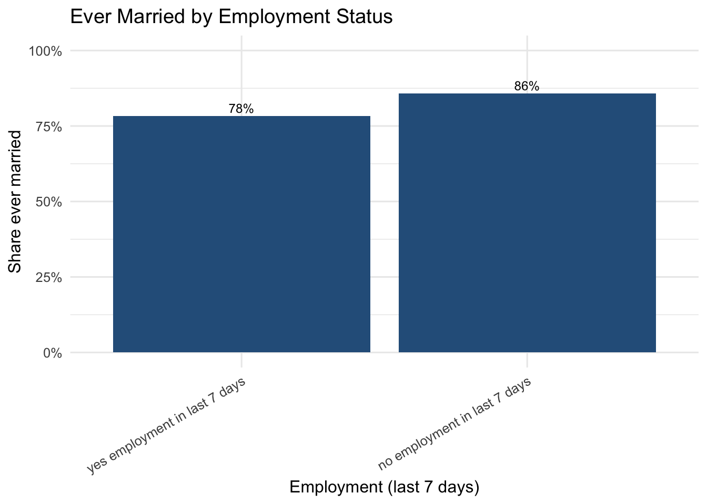
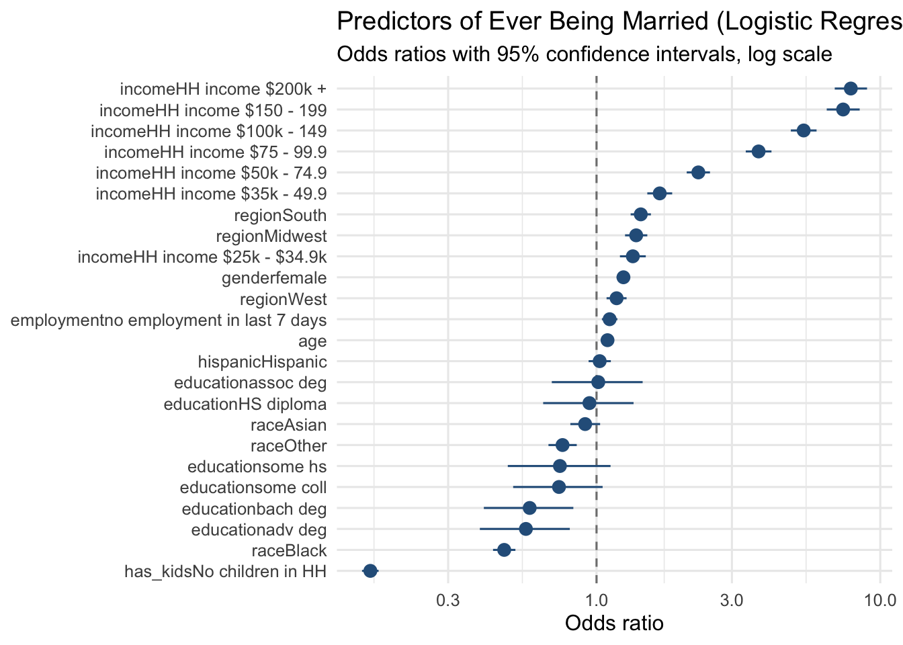

library(dplyr)
library(ggplot2)
library(forcats)
library(scales)
library(broom)
load("Household_Pulse_data.RData")
d <- Household_Pulse_dataHW3: Predictors of Ever Being Married
Household Pulse Survey
Building the outcome variable
The survey’s MS variable records current marital status: married, widowed, divorced, separated, or never married. “Ever married” groups together anyone who is or has been married (married / widowed / divorced / separated) versus those who report never having married. Rows with missing MS are dropped.
d <- d %>%
filter(!is.na(MS)) %>%
mutate(
ever_married = if_else(MS == "never", "Never married", "Ever married"),
ever_married = factor(ever_married, levels = c("Never married", "Ever married")),
# Household Pulse Survey covers 2020-2024; using the midpoint year as a
# reference since this extract has no per-row survey date.
age = 2023 - TBIRTH_YEAR,
age_group = cut(age, breaks = c(17, 24, 34, 44, 54, 64, 74, 100),
labels = c("18-24", "25-34", "35-44", "45-54",
"55-64", "65-74", "75+")),
# Kept as regular (non-ordered) factors so the regression below reports
# interpretable dummy-variable coefficients against a reference level,
# rather than orthogonal polynomial contrasts.
education = factor(EEDUC, levels = c("less than hs", "some hs", "HS diploma",
"some coll", "assoc deg", "bach deg", "adv deg")),
income = factor(INCOME, levels = c("HH income less than $25k", "HH income $25k - $34.9k",
"HH income $35k - 49.9", "HH income $50k - 74.9",
"HH income $75 - 99.9", "HH income $100k - 149",
"HH income $150 - 199", "HH income $200k +")),
gender = factor(EGENID_BIRTH),
race = factor(RRACE),
hispanic = factor(RHISPANIC),
region = factor(REGION),
# This extract encodes "not applicable" as a literal "NA" factor level
# rather than a true missing value, so those levels must be dropped
# explicitly rather than relying on is.na().
employment = factor(ANYWORK, levels = c("yes employment in last 7 days",
"no employment in last 7 days")),
has_kids = if_else(as.character(KIDS_LT5Y) != "NA" |
as.character(KIDS_5_11Y) != "NA" |
as.character(KIDS_12_17Y) != "NA",
"Has children in HH", "No children in HH"),
has_kids = factor(has_kids)
) %>%
filter(age >= 18, age <= 95)
n_total <- nrow(d)
overall_rate <- mean(d$ever_married == "Ever married")Sample size after cleaning: 69,114 respondents. Overall, 81.5% report having ever been married.
Ever-married rate by demographic factor
A small helper summarizes the ever-married rate within levels of a grouping variable, then plots it as a bar chart.
plot_rate_by <- function(data, group_var, title, xlab) {
summary_tbl <- data %>%
group_by(.group = {{ group_var }}) %>%
summarise(rate = mean(ever_married == "Ever married"), n = n(), .groups = "drop") %>%
filter(!is.na(.group))
ggplot(summary_tbl, aes(x = .group, y = rate)) +
geom_col(fill = "#2C5F8A") +
geom_text(aes(label = percent(rate, accuracy = 1)), vjust = -0.4, size = 3.2) +
scale_y_continuous(labels = percent, limits = c(0, 1)) +
labs(title = title, x = xlab, y = "Share ever married") +
theme_minimal(base_size = 12) +
theme(axis.text.x = element_text(angle = 30, hjust = 1))
}Age
p_age <- plot_rate_by(d, age_group, "Ever Married by Age Group", "Age group")
p_age
ggsave("hw3_married_by_age.png", p_age, width = 8, height = 5, dpi = 300)Education
p_educ <- plot_rate_by(d, education, "Ever Married by Education", "Education")
p_educ
ggsave("hw3_married_by_education.png", p_educ, width = 8, height = 5, dpi = 300)Household income
p_income <- plot_rate_by(d, income, "Ever Married by Household Income", "Household income")
p_income
ggsave("hw3_married_by_income.png", p_income, width = 9, height = 5, dpi = 300)Gender, race/ethnicity, and region
p_gender <- plot_rate_by(d, gender, "Ever Married by Gender", "Gender")
p_gender
p_race <- plot_rate_by(d, race, "Ever Married by Race", "Race")
p_race
p_hispanic <- plot_rate_by(d, hispanic, "Ever Married by Hispanic Origin", "Hispanic origin")
p_hispanic
p_region <- plot_rate_by(d, region, "Ever Married by Region", "Region")
p_region
ggsave("hw3_married_by_gender.png", p_gender, width = 6, height = 5, dpi = 300)
ggsave("hw3_married_by_race.png", p_race, width = 7, height = 5, dpi = 300)
ggsave("hw3_married_by_hispanic.png", p_hispanic, width = 6, height = 5, dpi = 300)
ggsave("hw3_married_by_region.png", p_region, width = 7, height = 5, dpi = 300)Children in household and employment
p_kids <- plot_rate_by(d, has_kids, "Ever Married by Presence of Children", "Children in household")
p_kids
p_emp <- plot_rate_by(d, employment, "Ever Married by Employment Status", "Employment (last 7 days)")
p_emp
ggsave("hw3_married_by_kids.png", p_kids, width = 6, height = 5, dpi = 300)
ggsave("hw3_married_by_employment.png", p_emp, width = 7, height = 5, dpi = 300)Which factors predict ever having been married?
The bar charts above show each factor on its own, but many of these variables are correlated with each other (age and income, for instance). A logistic regression lets us see which factors still predict marital history once we account for the others.
model <- glm(
ever_married ~ age + gender + race + hispanic + education + income +
region + has_kids + employment,
data = d,
family = binomial
)
summary(model)
Call:
glm(formula = ever_married ~ age + gender + race + hispanic +
education + income + region + has_kids + employment, family = binomial,
data = d)
Coefficients:
Estimate Std. Error z value Pr(>|z|)
(Intercept) -2.664644 0.195338 -13.641 < 2e-16
age 0.089091 0.001071 83.215 < 2e-16
genderfemale 0.218380 0.027940 7.816 5.44e-15
raceBlack -0.749292 0.046249 -16.201 < 2e-16
raceAsian -0.092469 0.061620 -1.501 0.133454
raceOther -0.275884 0.058518 -4.715 2.42e-06
hispanicHispanic 0.025501 0.045984 0.555 0.579185
educationsome hs -0.297155 0.212442 -1.399 0.161886
educationHS diploma -0.057652 0.186842 -0.309 0.757656
educationsome coll -0.304687 0.184910 -1.648 0.099403
educationassoc deg 0.014178 0.187804 0.075 0.939823
educationbach deg -0.542461 0.185043 -2.932 0.003373
educationadv deg -0.573127 0.185933 -3.082 0.002053
incomeHH income $25k - $34.9k 0.294631 0.053468 5.510 3.58e-08
incomeHH income $35k - 49.9 0.512802 0.051512 9.955 < 2e-16
incomeHH income $50k - 74.9 0.826220 0.048156 17.157 < 2e-16
incomeHH income $75 - 99.9 1.315193 0.053241 24.702 < 2e-16
incomeHH income $100k - 149 1.680976 0.053241 31.573 < 2e-16
incomeHH income $150 - 199 2.001099 0.068202 29.341 < 2e-16
incomeHH income $200k + 2.063560 0.066828 30.878 < 2e-16
regionSouth 0.359133 0.041952 8.561 < 2e-16
regionMidwest 0.321749 0.046047 6.987 2.80e-12
regionWest 0.162778 0.041397 3.932 8.42e-05
has_kidsNo children in HH -1.835440 0.034286 -53.533 < 2e-16
employmentno employment in last 7 days 0.106362 0.032053 3.318 0.000906
(Intercept) ***
age ***
genderfemale ***
raceBlack ***
raceAsian
raceOther ***
hispanicHispanic
educationsome hs
educationHS diploma
educationsome coll .
educationassoc deg
educationbach deg **
educationadv deg **
incomeHH income $25k - $34.9k ***
incomeHH income $35k - 49.9 ***
incomeHH income $50k - 74.9 ***
incomeHH income $75 - 99.9 ***
incomeHH income $100k - 149 ***
incomeHH income $150 - 199 ***
incomeHH income $200k + ***
regionSouth ***
regionMidwest ***
regionWest ***
has_kidsNo children in HH ***
employmentno employment in last 7 days ***
---
Signif. codes: 0 '***' 0.001 '**' 0.01 '*' 0.05 '.' 0.1 ' ' 1
(Dispersion parameter for binomial family taken to be 1)
Null deviance: 51219 on 54309 degrees of freedom
Residual deviance: 36598 on 54285 degrees of freedom
(14804 observations deleted due to missingness)
AIC: 36648
Number of Fisher Scoring iterations: 5or_tbl <- tidy(model, exponentiate = TRUE, conf.int = TRUE) %>%
filter(term != "(Intercept)")
or_tbl# A tibble: 24 × 7
term estimate std.error statistic p.value conf.low conf.high
<chr> <dbl> <dbl> <dbl> <dbl> <dbl> <dbl>
1 age 1.09 0.00107 83.2 0 1.09 1.10
2 genderfemale 1.24 0.0279 7.82 5.44e-15 1.18 1.31
3 raceBlack 0.473 0.0462 -16.2 4.95e-59 0.432 0.518
4 raceAsian 0.912 0.0616 -1.50 1.33e- 1 0.809 1.03
5 raceOther 0.759 0.0585 -4.71 2.42e- 6 0.677 0.852
6 hispanicHispanic 1.03 0.0460 0.555 5.79e- 1 0.938 1.12
7 educationsome hs 0.743 0.212 -1.40 1.62e- 1 0.487 1.12
8 educationHS diploma 0.944 0.187 -0.309 7.58e- 1 0.649 1.35
9 educationsome coll 0.737 0.185 -1.65 9.94e- 2 0.508 1.05
10 educationassoc deg 1.01 0.188 0.0755 9.40e- 1 0.696 1.45
# ℹ 14 more rowsp_or <- ggplot(or_tbl, aes(x = estimate, y = fct_reorder(term, estimate))) +
geom_vline(xintercept = 1, linetype = "dashed", color = "grey50") +
geom_pointrange(aes(xmin = conf.low, xmax = conf.high), color = "#2C5F8A") +
scale_x_log10() +
labs(title = "Predictors of Ever Being Married (Logistic Regression)",
subtitle = "Odds ratios with 95% confidence intervals, log scale",
x = "Odds ratio", y = NULL) +
theme_minimal(base_size = 12)
p_or
ggsave("hw3_odds_ratios.png", p_or, width = 9, height = 7, dpi = 300)Takeaways
- Report the overall ever-married rate and how it varies across the strongest bivariate factors from the bar charts (age is typically the biggest driver, since marital status accumulates over the life course).
- Use the odds-ratio plot to say which factors remain significant predictors after controlling for the others — points whose confidence interval crosses 1 are not statistically distinguishable from “no effect” in this model.
- Note the age proxy caveat: this extract has no per-row survey year, so age is approximated using the 2020-2024 survey midpoint (2023).